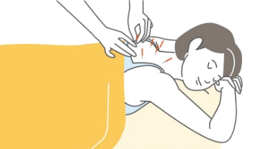

初めての方へ
当院の治療がはじめての方へ
当院では、まずお話を聞くことに重点をおいています。
そのため初診はできるだけお時間をいただいております。（約90～120分）
また、いつも受けている施術方法とは様子が違い、違和感を感じるかもしれません。
しかし当院では、原因を追究して病気の根本を治療することを目的としています。
詳しくは『女性のための鍼灸』をご覧ください。
鍼灸治療がはじめての方へ
一般的に鍼やお灸というと怖いイメージがあるようです。
注射の針や、昔のお灸のイメージが強いせいかもしれませんね。
テレビで見るような太くて長い鍼や熱いのを我慢するお灸をやっているところもありますが、当院では多くの女性に適した以下のようなものを使って治療しています。

消毒について
- 鍼について
-
当院で使用する鍼はとても細く、太さ0.14ミリのものと、0.16ミリのものが中心です。
個人差がありますが、刺した時の痛みはほとんどなく、いつ刺したかわからないという方がほとんどです。 - お灸について
-
当院の治療は鍼がほとんどですが、症状を診て必要な場合はお灸を使用することもあります。
皮膚に直接するのではなく、専用のシールを肌に貼って
艾（もぐさ：お灸）をのせるため、やけどをしたり、あとが残ったりすることはありません。
のせる艾の大きさも米粒の半分くらいです。
症状について
当院には、以下のような症状の方がよく来られています。
- 肩こり
- 腰痛
- ねちがい
- 五十肩
- 頭痛
- 神経痛
- めまい
- イライラ
- 自律神経失調症
- からだがだるい
- やる気がでない
その他の症状でお困りの方も、
お気軽にご来院ください。
年代別に多い症状例
-
0才~幼児
湿疹、アトピー性皮膚炎、夜泣き、
疳の虫（かんむし） -
10代
神経性過食症（摂食障害）、思春期 の頭痛や腹痛、PMS、不登校
-
20代
30代自律神経失調症、婦人科疾患、肩こり
や頭痛、心のストレス、不眠症、
不妊治療（体調管理） -
40代
50代更年期、自律神経失調症、婦人科疾患、 四十肩・五十肩、肩こりや頭痛、心のストレス、不眠症、不妊治療（体調管理）
-
60代
自律神経失調症、婦人科疾患、肩こりや 頭痛、腰痛、膝痛、関節痛、心のストレス、不眠症
効果があると認めれられています。